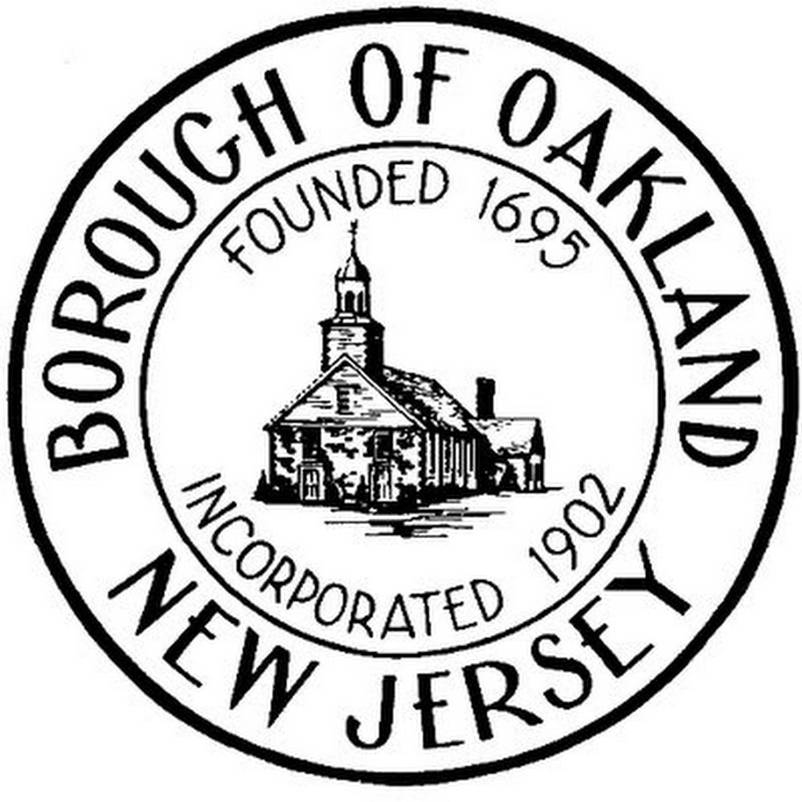

Occurring on a once-weekly basis, a symposium of Oakland's greatest minds come together to share ideas, solve puzzles, create projects, and learn advanced topics not covered in their daily classes. The program is designed to encourage the growing minds of students to sharpen on their critical thinking and problem solving skills needed later in life.

text1text2
Accomplishments and Achievements
-
Ipsum consequat
Sed lorem amet ipsum dolor et amet nullam consequat a feugiat consequat tempus veroeros sed consequat.
-
Amed sed feugiat
Sed lorem amet ipsum dolor et amet nullam consequat a feugiat consequat tempus veroeros sed consequat.
-
Dolor nullam
Sed lorem amet ipsum dolor et amet nullam consequat a feugiat consequat tempus veroeros sed consequat.
-
5,120 Etiam
-
8,192 Magna
-
2,048 Tempus
-
4,096 Aliquam
-
1,024 Nullam
Nam elementum nisl et mi a commodo porttitor. Morbi sit amet nisl eu arcu faucibus hendrerit vel a risus. Nam a orci mi, elementum ac arcu sit amet, fermentum pellentesque et purus. Integer maximus varius lorem, sed convallis diam accumsan sed. Etiam porttitor placerat sapien, sed eleifend a enim pulvinar faucibus semper quis ut arcu. Ut non nisl a mollis est efficitur vestibulum. Integer eget purus nec nulla mattis et accumsan ut magna libero. Morbi auctor iaculis porttitor. Sed ut magna ac risus et hendrerit scelerisque. Praesent eleifend lacus in lectus aliquam porta. Cras eu ornare dui curabitur lacinia.
About Mrs. Boomhower
After ten years, Mrs. Boomhower continues to oversee all aspects of the program. Mrs. Boomhower graduted from Duke University with a Bachelor of Arts in German and Psychology and received her teaching certification and Masters in Education from William Paterson University. She is highly qualified to teach middle school math, language arts, social studies, and science. Before taking the position of Workshop Coordinator at Valley Middle School, she was a fourth grade teacher at Manito Elementary School.